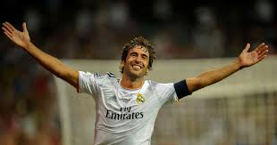
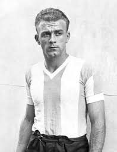

Introduction : Le Real Madrid est l'un des clubs les plus emblématiques et prestigieux de l'histoire du football. Fondé en 1902 à Madrid, en Espagne, il s'est imposé au fil des décennies comme une véritable référence en matière de succès et de domination sur le terrain. Avec un palmarès exceptionnel, comprenant de nombreux titres de champion d'Espagne, de Coupe du Roi et surtout de Ligue des champions, le club est un symbole de l'excellence sportive. Au-delà de ses performances sportives, le Real Madrid incarne également des valeurs fortes telles que la passion, l'engagement et la recherche constante de la perfection. Son histoire est marquée par des joueurs légendaires comme Alfredo Di Stéfano, Cristiano Ronaldo ou encore Zinedine Zidane, qui ont laissé une empreinte indélébile dans l'histoire du football. Dans cette page de garde, nous explorerons les origines du Real Madrid, son parcours dans les compétitions nationales et internationales, ainsi que l'impact qu'il a eu sur le monde du sport et sur des générations de supporters à travers le globe.
Le Real Madrid est l'un des clubs les plus prestigieux au monde, et plusieurs joueurs légendaires ont marqué son histoire. Parmi eux, Cristiano Ronaldo, Alfredo Di Stéfano, et Raúl González se distinguent comme de véritables icônes. Cristiano Ronaldo, arrivé au Real Madrid en 2009, a transformé le club avec son talent exceptionnel. En neuf saisons passées à Madrid, il est devenu le meilleur buteur de l'histoire du club, marquant plus de 450 buts. Sa détermination, son travail acharné et sa capacité à performer sous pression ont fait de lui l'un des meilleurs joueurs de tous les temps, remportant de nombreux titres, dont quatre Ligues des champions. Alfredo Di Stéfano est souvent considéré comme l’un des plus grands joueurs de l'histoire du football. Bien que n'étant pas espagnol, il a incarné l'âme du Real Madrid pendant les années 1950 et 1960. Sa polyvalence, sa vision du jeu et ses capacités techniques en ont fait un joueur incontournable, contribuant à l'épopée des cinq premières Coupes d'Europe consécutives du club. Enfin, Raúl González, figure emblématique de la maison blanche, a passé 16 ans au Real Madrid. Son leadership, sa capacité à marquer et son engagement envers le club ont fait de lui l'un des joueurs les plus respectés et admirés par les supporters. Raúl a été une pierre angulaire du succès du club dans les années 2000, remportant entre autres trois Ligues des champions et de nombreux titres nationaux. Ces trois légendes ont marqué l'histoire du Real Madrid par leur talent, leur passion et leur dévouement, et resteront à jamais gravées dans la mémoire des supporters du club.
 